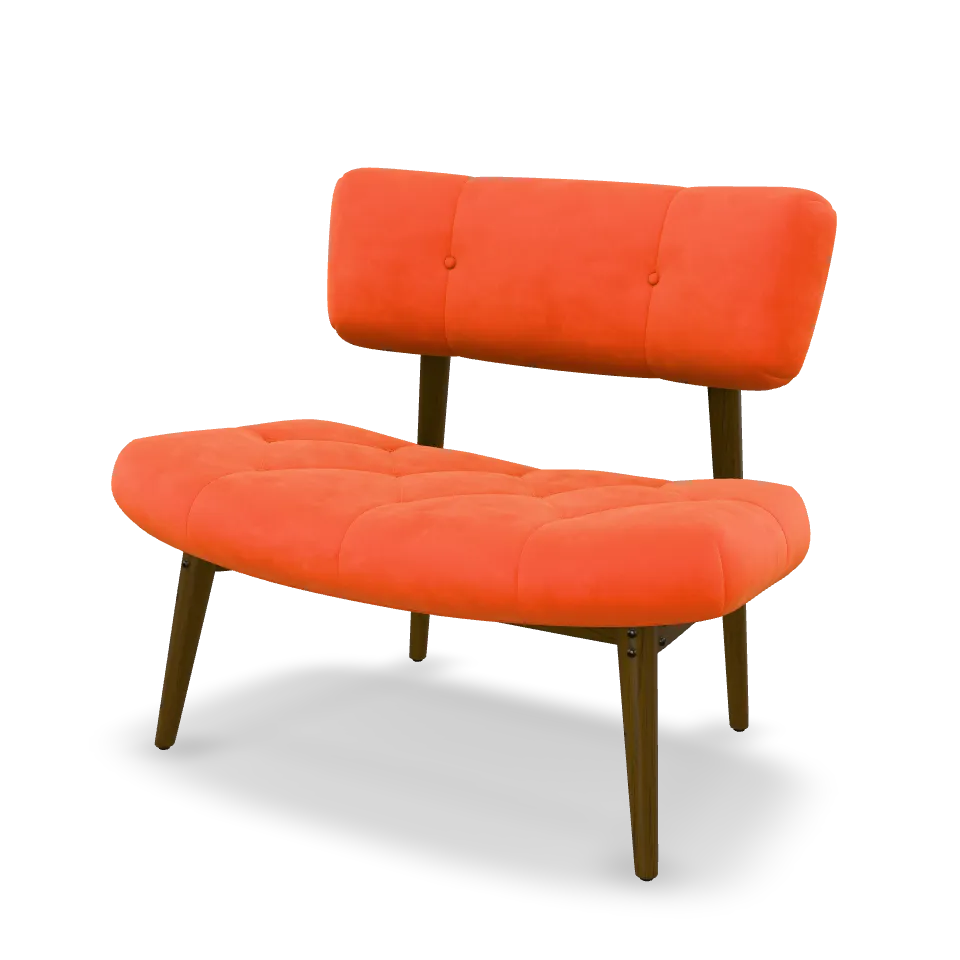

Thomas Gorisse
Lead Software Engineer
I build mobile SDKs with AI agents,
and the agent systems that build them.
Creator of
SceneView
· 3D & AR for Compose, SwiftUI and the web
thomasgorisse.github.io